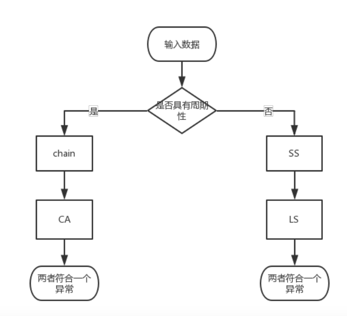
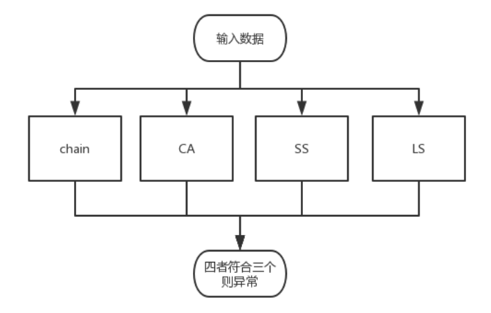

在异常检测的实践中，时间序列是一个很重要的概念，因为大多数平台的数据仓库都存储了时间序列数据。此时，检测异常就是检测不同性质的时间序列上的异常点或异常区间，根因分析的基础就是异常检测和基于异常检测算法的数值预测。
基于模型的方法
统计方法，主要通过拟合单个模型或多个模型来判断该点的概率。
- 单维情况：3σ法则，箱型图，Grubbs测试。
- 高维情况：Mahalanobis距离，卡方统计，单个/混合高斯分布
基于距离/临近度的方法
计算复杂度过高，且分布不均匀的点容易出错。
基于角度的离群点检测，k最近邻，LOF（Local Outlier Factor），COF（Connectivity Outlier Factor），Stochastic Outlier Selection Algorithm（无监督）。
基于密度的方法
一个数据对象的密度等于半径为d的邻域内的数据对象数。
基于聚类的方法
丢弃远离其他簇的小簇。
基于划分的方法
孤立森林。划分成树，深度越低，说明越容易被划分，即为离群点。
基于线性的方法
PCA（Principal Component Analysis）。
基于非线性的方法
RNNs（Replicator Neural Networks），AE（AutoEncoder），VAE（Variational AutoEncoder）。
针对非数值型的方法
Attribute Value Frequency。
基于深度学习的方法
衡量模型的不确定性的贝叶斯深度网络。
基于时间序列的异常检测方法
短期环比（SS），长期环比（LS），同比（chain），同比振幅（CA），算法组合，相空间重构，其他方法。
短期环比
- 窗口统计特征：3-sigma，z-score，Grubbs格拉斯测试，moving average（移动平均），cumulative moving average（累加移动平均），weighted moving average（加权移动平均），exponential weighted moving average（指数加权移动平均），double exponential smoothing（双指数平滑），triple exponential smoothing（三指数平滑，Holt-Winters），std-dev from average（平均值-标准差），std-dev from moving average（移动平均-标准差），std-dev from ewma（指数加权移动平均-标准差），histogram bins，median absolute deviation（中位数绝对偏差），median of deviation（MAD），mean subtraction cumulation，first hour average（前若干-平均值）。
- 窗口熵特征：描述时间序列确定性和不确定性以区分时间序列。
- 窗口分段特征：通过分段线性逼近、分段聚合逼近、分段常数逼近等进行数据降维，用少量数据进行原始时间序列的表示。
- 窗口总特征：时间窗口特征+OneHot特征+Timestamp所属星期作为特征，label选取时间窗口中间点的标签。
长期环比
通过拟合和EWMA等进行趋势判断。
同比
针对周期性曲线使用，辅助预测。
同比振幅
检测一些同比无法检测出的异常情况。
算法组合
判断周期性

不区分周期性

其他方法
Smoothed z-score algorithm。利用历史窗口针对下个节点做预测；对异常点的数值进行平滑以评估下个点是否为异常点。
相空间重构
混沌时间序列的处理。